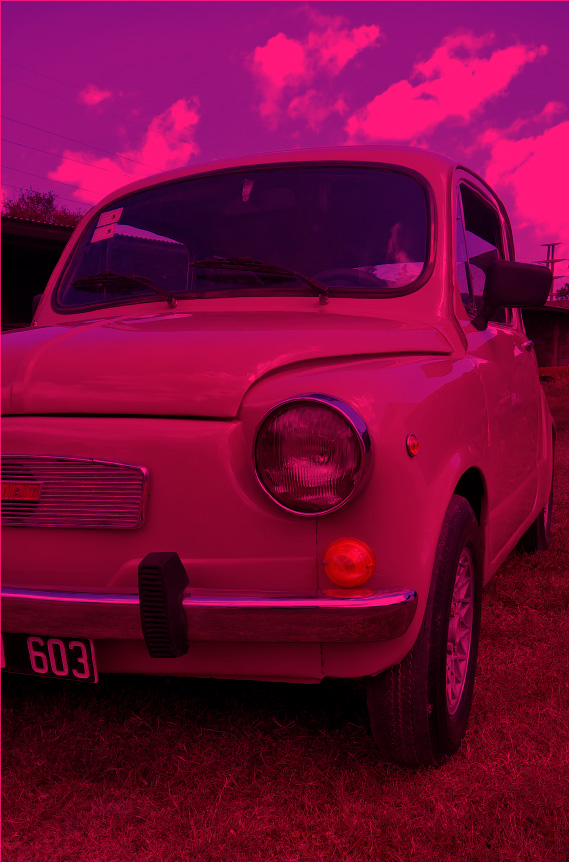
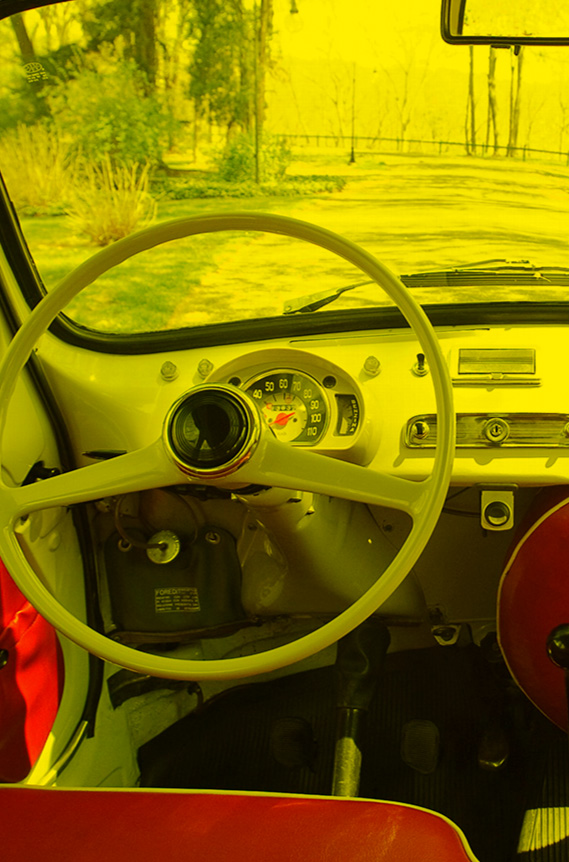
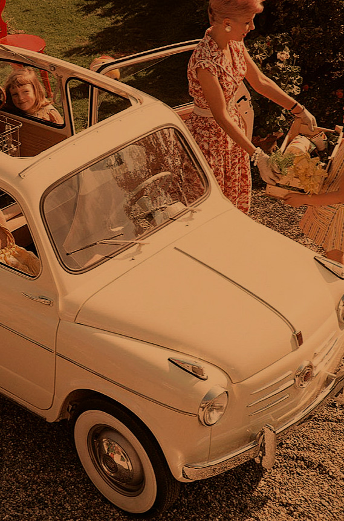

El Fiat 600 fue un pequeño automóvil diseñado por Dante Giacosa y construido por la empresa italiana Fiat desde 1955 hasta 1982. Fue un éxito mundial que se fabricó en muchos países, en la mayoría de ellos bajo la marca Fiat. También se fabricó bajo otras marcas, como los fabricados a través de licencias de producción como SEAT en España del SEAT 600 entre los años 1957 a 1973 o como Zastava en Yugoslavia con el Zastava 750 desde 1955 hasta 1985. El Fiat 500 (lanzado en 1957), es posterior al Fiat 600 y este a su vez posterior al Fiat Topolino (1936).Hubo una versión con más capacidad interior, el Fiat 600 Multipla, fabricada exclusivamente en Italia. Este vehículo representó una evolución únicamente en cuanto a carrocería, manteniendo intacta la configuración mecánica del modelo, siendo uno de los primeros monovolúmenes de la historia, con su generoso aprovechamiento del espacio, y capaz de albergar 6 pasajeros.
Para muchos fue su primer auto o al menos el auto con el que aprendieron a manejar. Quizás por ello la pasión y el amor que despierta en los fanáticos adolescentes, adultos y abuelos.


